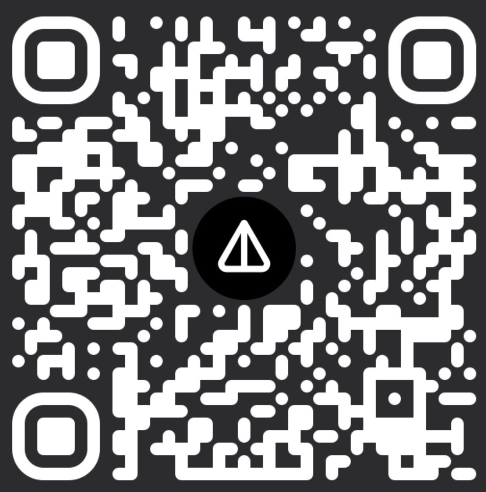

Timeline Studio API Documentation - v1.3.9
🎬 AI-Powered Video Editor • 🚀 Multi-Platform Export • ⚡ GPU Acceleration
Italiano | Español | Français | Deutsch | Русский | 中文 | Português | 日本語 | 한국어 | Türkçe | ไทย | العربية | فارسی | हिन्दी


🎬 About the Project
What is Timeline Studio?
Timeline Studio is a next-generation professional video editor with AI integration that automates content creation for social media. Built on modern technologies (Tauri + Next.js), it combines the power of desktop applications with the convenience of web interfaces.
🎯 Key Advantages
- 🤖 151 AI Tools - complete video production automation with multi-provider support
- ⚡ GPU Acceleration - hardware encoding NVENC, QuickSync, VideoToolbox
- 🔌 Plugin System - extend functionality without changing code
- 🌐 15 Language Interface - complete localization for global audience with RTL support
- 🔒 Local Processing - your content stays private
- 📊 80%+ Test Coverage - professional-level reliability
🚀 Problems We Solve
One upload → dozens of ready versions:
- 📱 TikTok - vertical shorts with trending effects (direct upload)
- 📺 YouTube - full movies, short clips, Shorts (direct upload)
- 🎬 Vimeo - high-quality cinematic versions (direct upload)
- ✈️ Telegram - optimized versions for channels and chats (direct upload)
- 📸 Instagram - Reels, Stories, posts optimized for manual upload
💡 How It Works
"Create a video about my trip to Asia for all social media" - and in minutes you have ready variants: dynamic shorts for TikTok, atmospheric vlog for YouTube, bright Stories for Instagram. AI selects the best moments, syncs with music and adapts for each platform.
⚡ Why This Changes Everything
- 10x Time Savings - no more manual adaptation for each video
- AI Understands Trends - knows what works on each social network
- Professional Quality - using the same tools as major studios
- Modular Architecture - easily add new features through plugins
- Open Source - transparency and ability to participate in development

🏗️ Architecture
Timeline Studio is built on modern modular architecture:
Frontend (Next.js 15 + React 19)
- Feature-based organization - each function in
/src/features/is self-contained - State Management - XState v5 for complex states
- UI Components - shadcn/ui + Radix UI + Tailwind CSS v4
- TypeScript - strict typing and safety
Backend (Rust + Tauri v2)
- Modular structure - Core, Security, Media, Compiler, Plugins
- Service layer - DI container, EventBus, Telemetry
- FFmpeg integration - advanced video processing
- Security - API key encryption, OAuth, Keychain
📚 Detailed Frontend Architecture → 📚 Detailed Backend Architecture → 📚 Plugin System → 🛠️ Technical Stack Details →
🤖 AI Integration
Timeline Studio features comprehensive AI integration with 151 specialized tools:
AI Providers
- Claude (Anthropic) - Primary AI with advanced reasoning
- OpenAI - GPT-4 models for diverse tasks
- DeepSeek - Specialized reasoning models
- Ollama - Local models for offline operation
AI Tool Categories
- Timeline Tools (50) - Intelligent project creation and editing
- Media Analysis (27) - Scene detection, quality analysis, content intelligence
- Audio Processing (12) - Transcription, noise removal, music sync
- Export Optimization (12) - Platform-specific adaptations
- Effects & Filters (10) - AI-powered visual enhancements
- And 40+ more specialized tools
📚 AI Chat Documentation → 🛠️ AI Tools Reference →
📚 Backend Module Documentation
Timeline Studio uses a modular Rust backend architecture. Each module provides specific functionality:
Core Modules
🔧 Core System - DI container, EventBus, Performance monitoring 🔌 Plugin System - Modular plugin architecture with sandbox security 🎬 Video Compiler - FFmpeg integration and video processing 📁 Media Management - File scanning, metadata extraction, thumbnails
AI & Recognition
🧠 Smart Montage Planner - AI-powered video montage generation 👁️ Recognition System - YOLO object detection and scene analysis 📝 Subtitles Engine - Subtitle generation, parsing, synchronization
Security & Services
🔒 Security Module - API validation, OAuth, secure storage
All modules include comprehensive test suites and detailed API documentation.
🏗️ Project Status
🚀 Alpha version: 97.5% ready 🎯
✅ Completed: 55+ modules (100% ready) - 30+ frontend + 25+ backend 📋 Recently Completed:
- 🤖 AI Chat Integration - Full Claude/OpenAI/DeepSeek/Ollama provider support with 151 specialized tools
- 💬 Chat UI - Modern chat interface with markdown support, code highlighting, and streaming responses
- 🧠 Smart Montage Planner - AI-powered automatic montage generation with quality analysis
- 🎬 Timeline Integration - Complete timeline editing with AI assistance
Getting Started
Quick Setup
# Clone and install
git clone https://github.com/chatman-media/timeline-studio.git
cd timeline-studio
bun install
# Run development mode
bun run tauri dev
Requirements
- Node.js v18+, Rust, Bun, FFmpeg
🚑 Troubleshooting Common Issues
FFmpeg Not Found
# macOS
brew install ffmpeg
export ORT_DYLIB_PATH=/opt/homebrew/lib/libonnxruntime.dylib
# Windows - use setup script
./scripts/setup-rust-env-windows.ps1
# Linux
sudo apt-get install ffmpeg libavcodec-dev libavformat-dev
Build Failures
- Windows: Ensure Visual Studio 2022 with C++ tools is installed
- macOS: Install Xcode Command Line Tools:
xcode-select --install - Linux: Install build essentials:
sudo apt-get install build-essential
📚 Complete Installation Guide → 🪟 Windows Setup → 🎥 Video Tutorial → 📖 Full Documentation → - Complete documentation with 18+ sections
Development
Quick Start
# Development mode
bun run tauri dev
# Run tests
bun run test && bun run test:rust
# Check code quality
bun run check:all
📚 Complete Development Guide →
CI/CD & Code Quality
Automated Workflows
- ✅ Linting: ESLint, Stylelint, Clippy
- ✅ Testing: Frontend (Vitest), Backend (Rust), E2E (Playwright)
- ✅ Coverage: Codecov integration
- ✅ Build: Cross-platform builds
📚 Detailed CI/CD Guide → 🔧 Linting & Formatting →
👨💻 Developer Resources
Contributing to Timeline Studio
- 🤝 Contributing Guide - How to contribute to the project
- 🐛 Report Issues - Found a bug? Let us know!
- 💡 Feature Requests - Suggest new features
Plugin Development
- 🔌 Plugin System Guide - Build your own plugins
- 🚀 Plugin Quickstart - Get started in 5 minutes
- 📦 Plugin API Reference - Complete API documentation
Testing & Quality
- 🧪 Testing Guide - Unit, integration, E2E testing
- 📊 Test Utils - Audio and Tauri component testing
- ✅ Code Style - Coding standards
- 🔍 Performance Guide - Optimization tips
🌐 Community & Support
Join Our Community
Get Help
- 📚 FAQ - Frequently asked questions
- 💬 Discussions - Ask questions, share ideas
- 🐛 Issue Tracker - Report bugs
- 📧 Email Support - ak.chatman.media@gmail.com
Project Roadmap
- 🗺️ Development Roadmap - See what's coming next
- ✨ Completed Features - Recently shipped features
- 🎯 Alpha Release Progress - 97.5% complete!
- 📊 Project Status - Current development stats
Support the Project
- ⭐ Star on GitHub - Show your support
- 🤝 Contribute - Join the development
- 💼 Commercial License - For business use
🤝 Contributors
Thank you to all the amazing people who have contributed to Timeline Studio:
💎 Sponsors
Timeline Studio is supported by these amazing sponsors:
🌟 Gold Sponsors


Special thanks to our generous crypto sponsors who have contributed $1,000+ to the project development!
Support 💝🚀
Support the development via crypto donations:
BTC 14s9Y9Rb2CUWHSAatiQMhfkpx1MWXofUzw
|
ETH 0x286D65151b622dCC16624cEd8463FDa45585fd60
|
TON UQD1M80nPyzph5ZW1vfp_r19XI5MaerNhDq4dWXbXCo96WFj
|
NOT  UQD1M80nPyzph5ZW1vfp_r19XI5MaerNhDq4dWXbXCo96WFj
|
Star History
Repo Activity

License
MIT License with Commons Clause - free for personal use, commercial use requires agreement.
📄 Full License Details → | 📧 Commercial License: ak.chatman.media@gmail.com